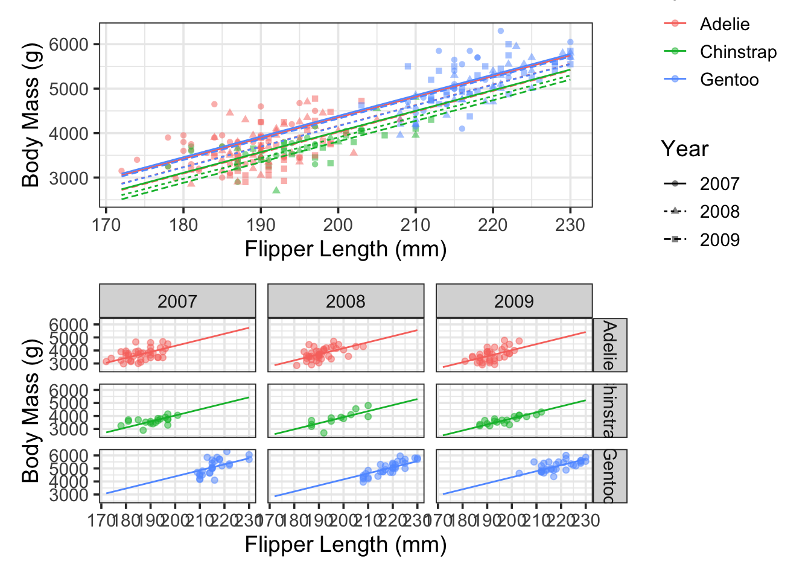
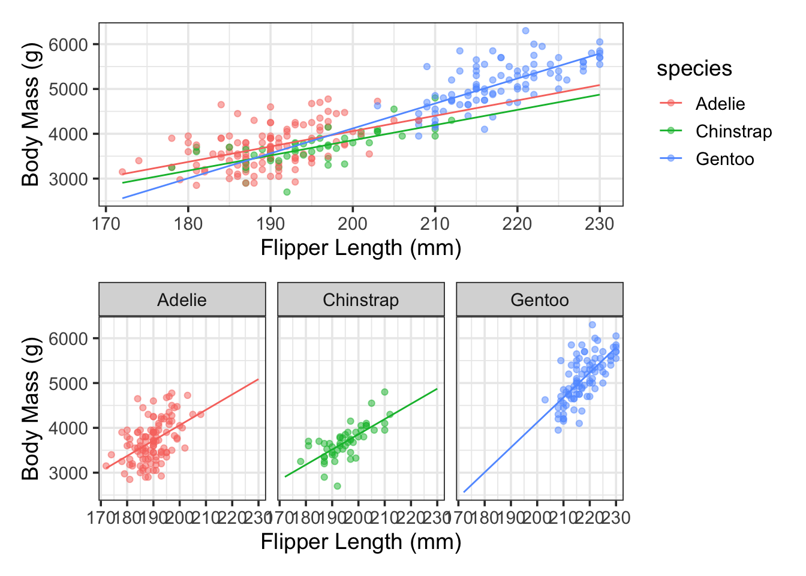
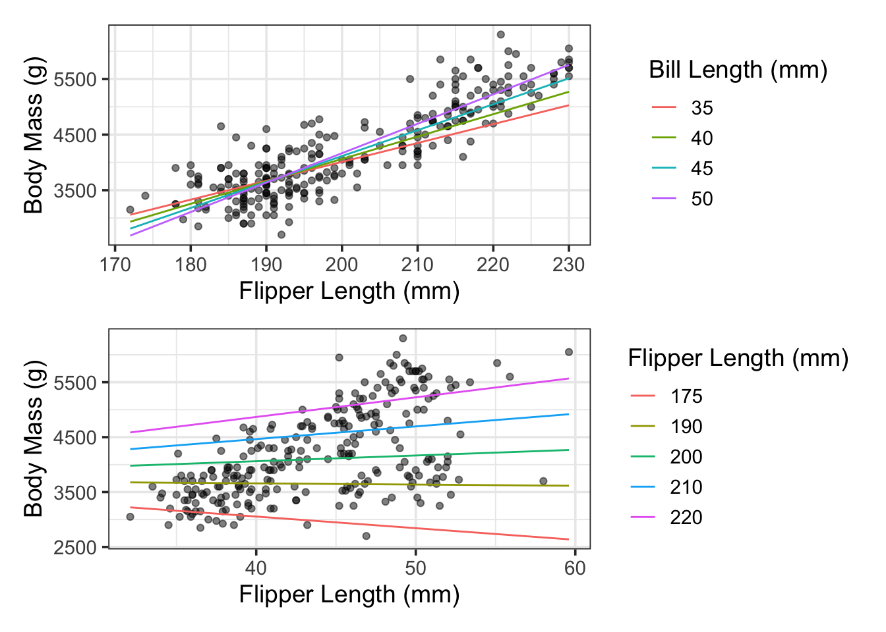

In the last notebook, we saw how to model curvi-linear relationships. We added curvature to our models by feature engineering with step_poly() as a component of a recipe(). In that notebook, we saw that introducing curvature can improve model performance and can help us model more complex relationships, but results in models which are more difficult to interpret.
In this notebook, we’ll consider another way that we can potentially improve model performance. That is, by allowing predictors to interact with one another. Interactions allow for the relationship between two variables (a predictor and a response) to depend on the value of a third variable (another predictor). The impact of an interaction term on a model depends on the types of variables which are interacting – we’ll explore the possibilities in this notebook. Similar to models including polynomial terms, we’ll sometimes observed improved fit when using models with interaction terms, but those resulting models become more difficult to interpret.
Objectives
Use exploratory data analysis to identify visual evidence for interaction between predictors.
Use step_interact() to create additional model terms corresponding to the interaction (product) between two or more predictors.
Fit, assess, reduce, interpret, and utilize models including interactions terms.
Models Including Interaction (step_interact())
We can use interaction terms when we expect that the association between our response and one predictor depends on the value of a second predictor. There are three types of interactions between two variables:
Interactions between two categorical predictors result in a shift of intercept, associated with combinations of categories. This is very similar to what happened when we first introduced categorical predictors – there we got a different intercept for each level of the categorical predictor. Now, we’ll get an adjustment to the intercept for each combination of levels of the corresponding predictors.
For example, if we allow species and year to interact in a model to predict penguin body_mass_g, we’ll have potentially unique intercepts for each species and observed year combination.
Interactions between a categorical predictor and a numerical predictor allow for different slopes/curvatures in the association between the response and corresponding predictor across different levels of the categorical variable.
For example, if we allow species and bill_depth_mm to interact in a model to predict penguin body_mass_g, we’ll allow for the association between bill_depth_mm and body_mass_g to be different across the three species of penguin.
Interactions between two numerical variables allow for the association between the response (\(y\)) and a predictor (\(x_1\)) to depend on the value of a second predictor (\(x_2\)).
There is not necessarily a nice slope or intercept interpretation here, however, interactions between pairs of numerical predictors can introduce curvature to your regression model. Simply put, if a model includes an interaction term \(\beta x_1 x_2\), in order to know the expected impact of a unit increase of \(x_1\) on the response variable (\(y\)), we must decide which level of the variable \(x_2\) we are interested in first.
As an example, if we allow bill_depth_mm to interact with bill_length_mm in a model predicting penguin body_mass_g, then we are saying that the expected impact of a unit increase in bill_length_mm on body_mass_g will be different for penguins having different bill_depth_mm values.
Interactions in Action!
Let’s see these different types of interactions in action with the penguins data. We’ll look at the three scenarios above one-by-one and then we’ll try pulling everything together.
Interactions Between Two Categorical Variables
Let’s say that we propose a model which predicts penguin body_mass_g using flipper_length_mm, species, year, and an interaction between species and year. Such a model is of the following form:
There’s lots of coefficients in this model! Let’s fit it and see what we actually end up with. In order to fit this model, we’ll need to include some feature engineering step_*()s. First, we’ll need to obtain dummy variables for the levels of the species and island predictors – we’ll use step_dummy() for that. Then, we’ll want to allow those dummy variables to interact – we’ll use step_interact(), with a few tricks.
step_interact() requires the use of a tilde (~) prior to defining the terms that should interact with one another.
We’ll denote terms that should interact with one another via the colon (:).
We replaced species and island with corresponding dummy variables when we used step_dummy(), so those columns will not be available in the transformed data being passed to step_interact(). Instead, we’ll have a series of columns like species_X, species_Y, … , and island_A, island_B,… – rather than defining all of these individual interactions, we’ll use the starts_with() selector function to obtain the groups of columns we want interacting with one another.
There are some interesting things happening here. Several of our model terms have large p.values, indicating that they may not be significant predictors of penguin body_mass_g. However, if we look more closely, some of the terms are significant.
The species_Gentoo term is not significantly different from the base level (species_Adelie), but the species_Chinstrap term is significantly different from the base level.
Both year categories are significantly different from the base year (year_2007).
The interaction between species and year is significant for Gentoo penguins in the year \(2009\), but not for any of the other combinations of species and year.
If all levels of a categorical predictor (or interaction) show insignificant p.values, then we would drop that predictor (or the corresponding interaction) from the model. Since some of the terms resulting from the categorical predictor (or interaction) are statistically significant, then we’ll keep all of the corresponding model terms.
(\(\star\)) There are some other things we could do here – we can address some of them, as well as their benefits and drawbacks, in class.
Okay, let’s look at the model. The model including estimated \(\beta\)-coefficients is:
From this, we can make interpretations as follows:
On average, controlling for species and observation year, a unit increase in penguin flipper_length_mm is associated with a penguin body_mass_g increase of about \(46.42\) grams.
Controlling for flipper_length_mm, Chinstrap penguins are about \(315.26\) grams less massive than Adelies, on average. The data used to fit the model doesn’t seem to suggest significant changes in Chinstrap mass year over year.
Controlling for flipper_length_mm, the data used to fit the model doesn’t seem to suggest that Gentoo penguins have significantly different body_mass_g than Adelie penguins. However, there does seem to be a change in the year \(2009\) – Gentoos observed during that year seem to be much more massive than Adelies in that year (by about $267.92 - (-330.23) grams).
Controlling for flipper_length_mm, Adelie penguins seem to have less mass year-over-year. Approximately \(186.5\) grams lower than their average \(2007\)body_mass_g in \(2008\) and approximately \(330.23\) grams lower than their average \(2007\)body_mass_g in \(2009\).
Warning: Removed 2 rows containing missing values or values outside the scale range
(`geom_point()`).
Removed 2 rows containing missing values or values outside the scale range
(`geom_point()`).

The single plot above which shows the model with all of the varied intercepts may be difficult to read, but it is clear that the slope of each line is the same. That is, the estimated association between flipper_length_mm and body_mass_g is constant across each of the combinations of species/year category. The intercepts are all that were varied! The plot on the right is much more readable, but the impact of the categorical variables and the corresponding interactions is less obvious from that plot.
Interaction Between a Categorical and Numerical Predictor
Let’s say that we propose a model which predicts penguin body_mass_g using flipper_length_mm, species, and an interaction between species and flipper_length_mm. Such a model is of the following form:
We’ll build this model similar to the previous one. We’ll use step_dummy() to convert species to corresponding dummy variables and then we’ll use step_interact() to obtain interactions between each level of the species variable and the flipper_length_mm.
Warning: Removed 2 rows containing missing values or values outside the scale range
(`geom_point()`).
Removed 2 rows containing missing values or values outside the scale range
(`geom_point()`).

The visual shows what we see numerically in the model summary output – the data do not provide convincing evidence that the association between body mass and flipper length is different (in either intercept or slope) between Adelie and Chinstrap penguins. The data do suggest, however, that both the slope and intercept in this model is different between Adelie and Gentoo penguins.
Interaction Between Two Numerical Predictors
Let’s say that we propose a model which predicts penguin body_mass_g using flipper_length_mm, bill_length_mm, and an interaction between these two predictors. Such a model is of the following form:
We’ll build this model similar to the previous one. Since both of our variables are numerical, we no longer need step_dummy() and we’ll go straight to step_interact().
We’ve obtained our estimated model and the interaction between flipper_length_mm and bill_length_mm is statistically significant. The estimated mode is
Notice that this model allows for the expected increase in body mass due to an increased flipper length to depend on the bill length. Similarly, the expected increase in body mass due to an increased bill length depends on the flipper length in this model.
It will be easiest to understand this phenomenon by calculating a few values or by plotting our models using various assumed levels for our predictors.
Warning: Removed 2 rows containing missing values or values outside the scale range
(`geom_point()`).
Removed 2 rows containing missing values or values outside the scale range
(`geom_point()`).

In each case, we can see that the slope of the modeled association between penguin body mass and the plotted predictor depends on the level (value) of the third variable.
Your Task
Use what you’ve learned to build a model to predict penguin body_mass_g using bill_depth_mm.
Update your model to include a main effects term for species.
Update your model with an additional term allowing for interaction between species and bill_depth_mm.